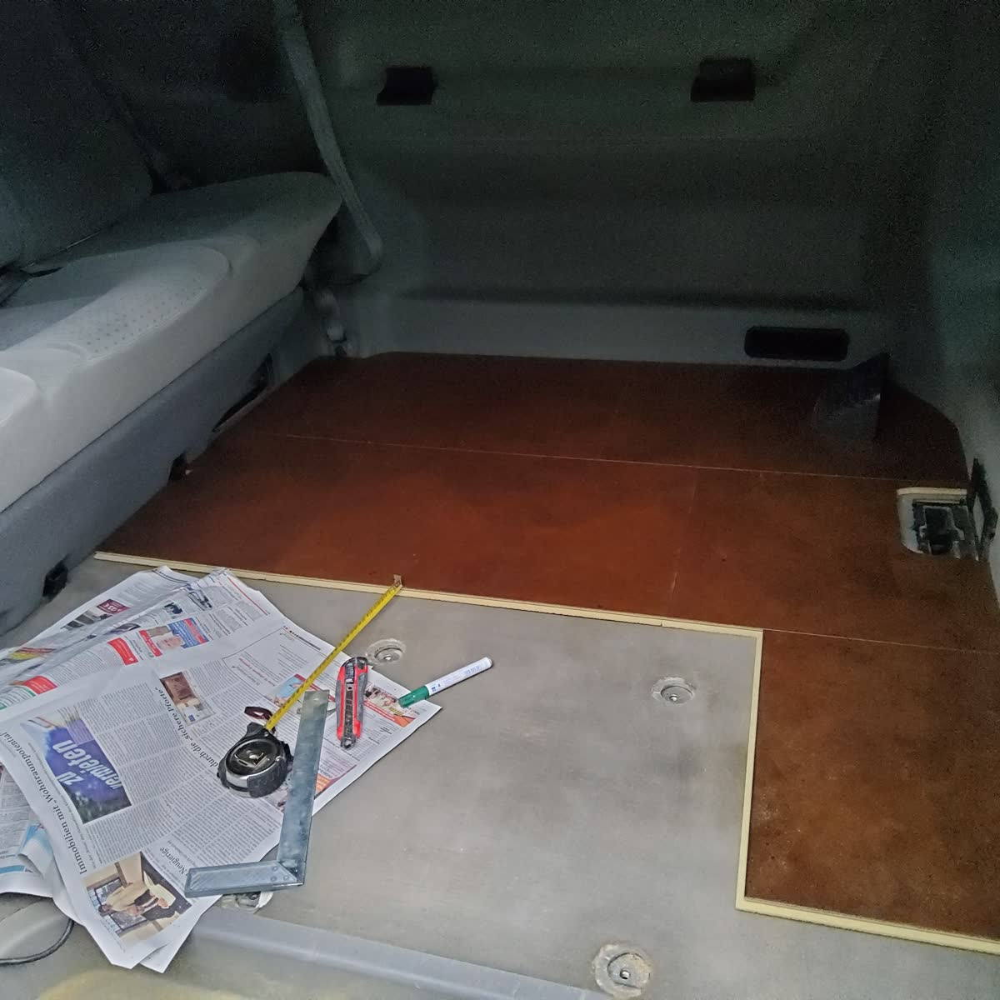

C’est comme ça que j’ai construit le plancher — mon tout premier T4
Bonjour, c’est Justine de Tussy Van ! 💛 Aujourd’hui, je vais vous emmener tout au début — à mon tout premier T4, le VR6 argenté. Mon histoire de vanlife a commencé avec lui, et la première véritable étape majeure d’expansion a été le plancher. Ça a l’air peu spectaculaire ? Mais c’est la base de tout ce qui vient après — et honnêtement, du moment où une camionnette est lentement devenue mon foyer.

Une VW T4 Caravelle, construite en 1998, avec un moteur VR6 et un porte-bagages de toit par-dessus. De l’extérieur, un bus argenté discret — à l’intérieur, une feuille de papier blanche n’attendant que de devenir ma maison roulante.
Étape 1 : Modèles, modèles, modèles
Le plancher du T4 est tout sauf une simple boîte rectangulaire : les arelles, les rails de selle, les bords du seuil et la section arrière inclinée détruisent tout panneau droit. Mon conseil le plus important dès le début : Prenez votre temps avec les modèles. Je travaillais avec de vieux journaux et du carton, les posais pièce par pièce sur le sol, pliais les bords et suivais les contours. Ainsi, même les coins les plus tordus peuvent être dessinés proprement sur le papier.

Étape 2 : Transférer et recadrer
J’ai ensuite transféré les pochoirs en carton sur les éléments à clic. Marquez le contour, découpez-le avec la coupe ou la scie sauteuse, testez sur le bord réel, et faites-le correspondre. Mieux vaut ajuster une ou deux fois plus que de révéler un élément.

Étape 3 : Travailler par segments
Je suis au courant du sol non Répandu en un seul morceau, mais en plusieurs segments. Cela présente deux avantages : vous n’introduisez les éléments dans la voiture que par la porte coulissante, et les zones individuelles (par exemple, au-dessus des compartiments de rangement ou la batterie) restent accessibles. J’ai travaillé soigneusement jusqu’au bord de la hayon arrière pour que rien ne vacille ou ne se dresse plus tard.

Étape 4 : Le centre de table — sol en liège avec isolant
Voici maintenant mon détail préféré — et la raison pour laquelle ce sol peut faire plus que simplement être joli : j’ai installé un Sol en liège à clic en décoration en noyer. Elle est un peu plus épaisse qu’une base à clic classique et possède une couche supplémentaire de liège comme isolant. C’est précisément ce qui fait la différence : elle retient plus de chaleur dans la voiture et ralentit le froid qui autrement monterait d’en dessous — dans la T4, elle vaut son poids d’or, surtout les nuits fraîches. Et comme le liège est naturellement chaud et silencieux, le sol est confortable même pieds nus.
J’ai déplacé les éléments de clic directement sur le Moquette d’origine pour voiture — bien sûr, soigneusement nettoyé au préalable. Ainsi, la moquette reste en place, économise des efforts et agit comme une sous-couche douce et isolante supplémentaire. Pas de déchirure, pas de collage — juste une base propre et chaude pour ce qui viendra plus tard.

- Les pochoirs en carton/journaux vous évitent des coupures coûteuses.
- Travail par segments — passe par la porte et reste accessible.
- Sol en liège avec isolant en liège = chaleur venant d’en bas, calme et facile à entretenir.
- Posé sur une moquette d’origine propre — permet d’économiser du temps et offre une isolation supplémentaire.
Je vais bientôt ajouter ici les liens spécifiques des produits (quelques publicités/affiliations).
Ce plancher a été la première marche d’un bus qui m’a emmenée à travers d’innombrables aventures. Vous pouvez en apprendre davantage sur l’intérieur du VR6 — station d’eau, toilettes à séparation sèche et électricité sans panneaux solaires — dans « Le T4 VR6 comme camping-car quotidien ».
À bientôt et bon voyage toujours,
votre Tussy 💛